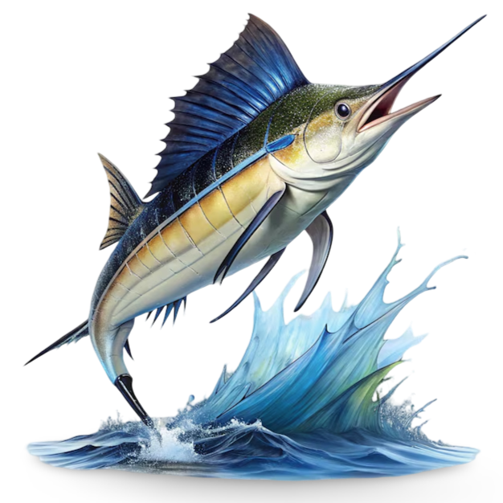
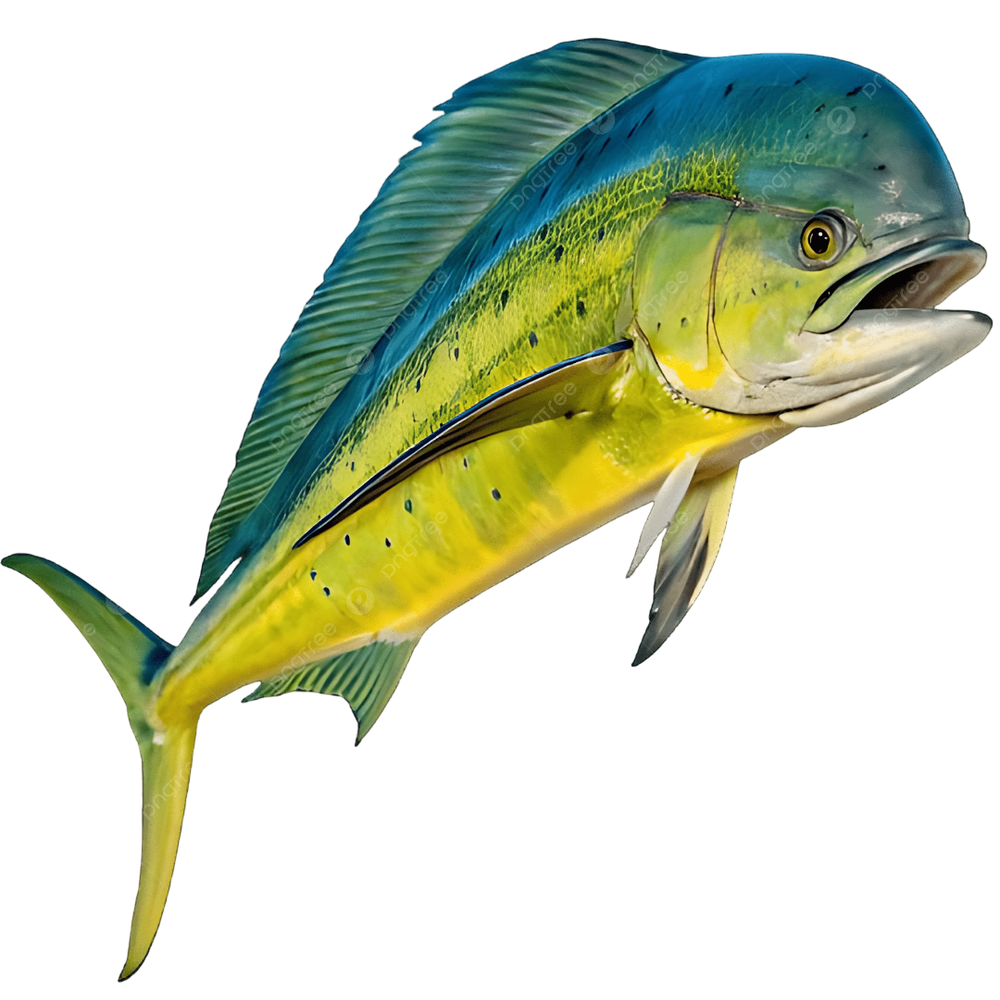
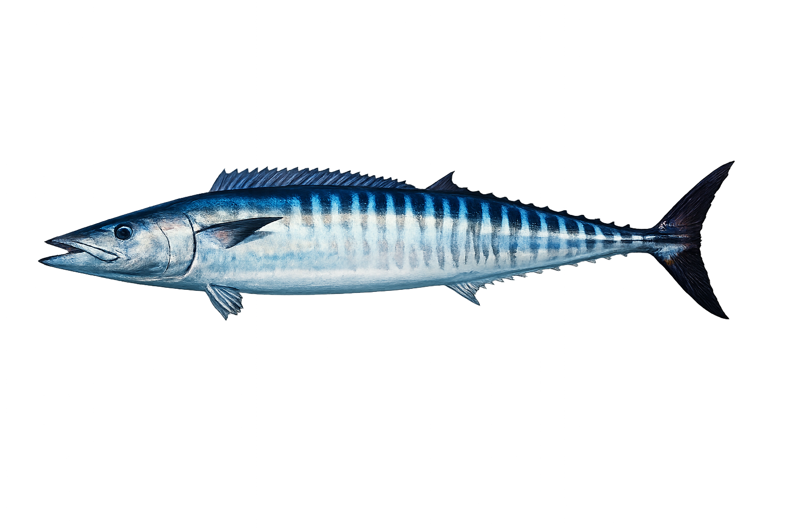
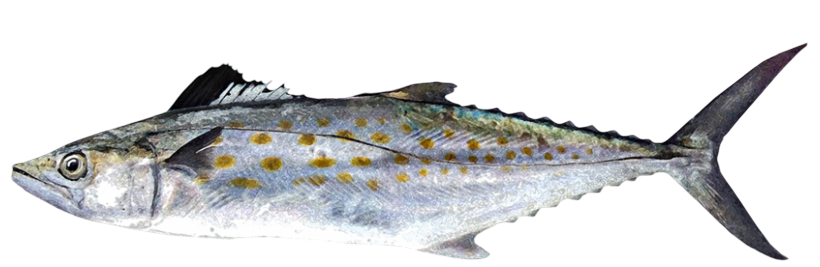
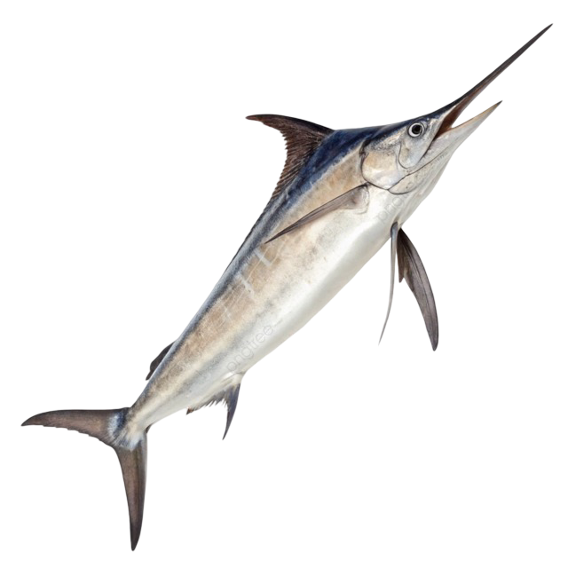
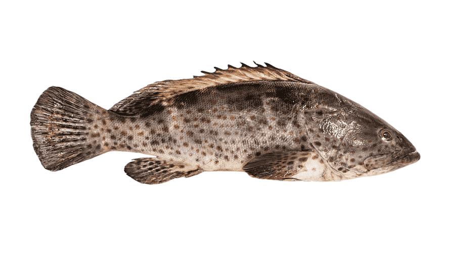
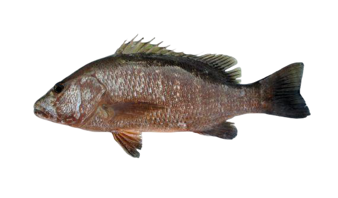
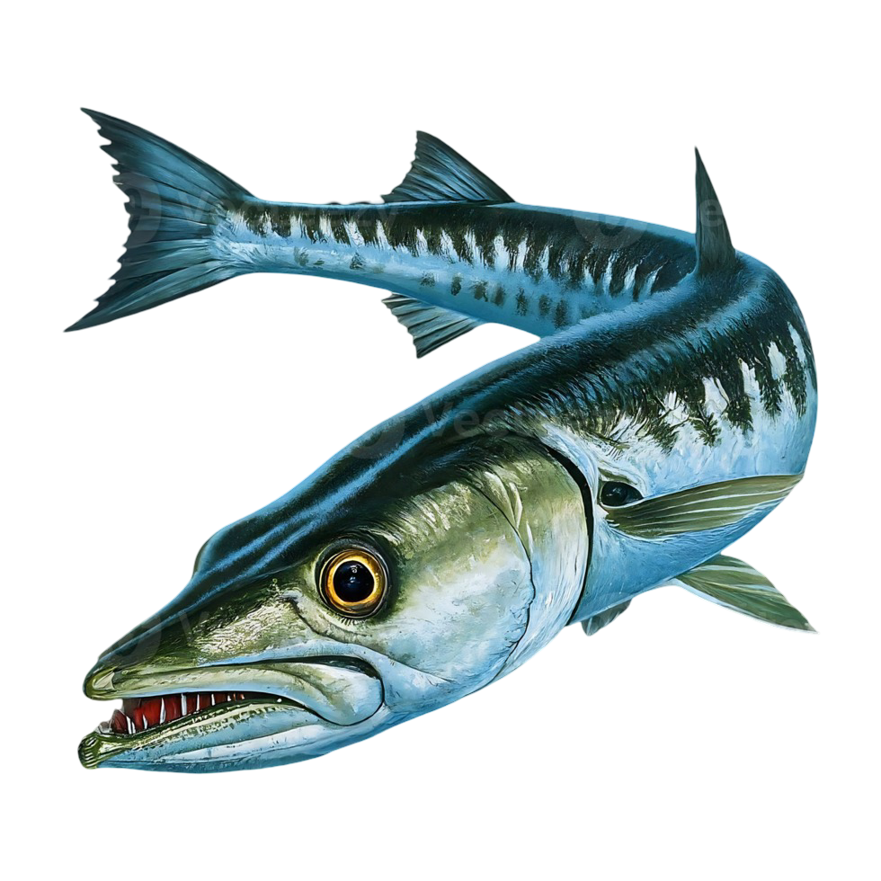
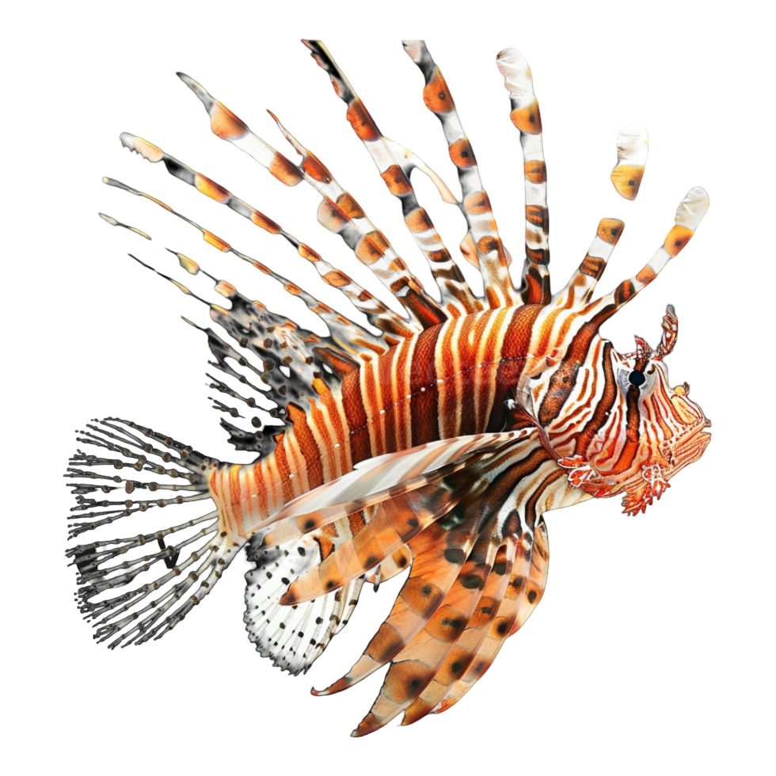
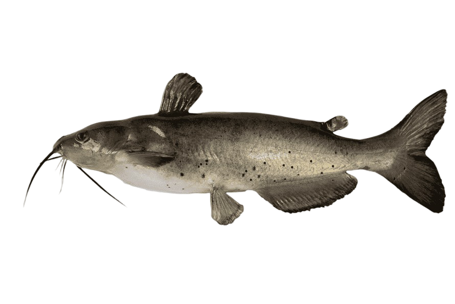

Pez Vela
ℹ️ Información del pez: El pez vela es un depredador marino extremadamente rápido, reconocido por su gran aleta dorsal en forma de vela y por su capacidad de alcanzar velocidades muy altas.
🌊 Hábitat: Mar abierto y zonas costeras
🎣 Alimentación: Peces pequeños y calamares
🕒 Mejor pesca: Mañana y tarde
📍 Zona: Aguas tropicales

Dorado
ℹ️ Información del pez: El dorado es un pez de gran tamaño y muy rápido, conocido por sus colores brillantes y por ser muy buscado por los pescadores deportivos.
🌊 Hábitat: Aguas cálidas y mar abierto
🎣 Alimentación: Peces pequeños y crustáceos
🕒 Mejor pesca: Amanecer
📍 Zona: Zonas tropicales

Atún
ℹ️ Información del pez: El atún es un pez marino veloz y resistente que puede recorrer grandes distancias en mar abierto.
🌊 Hábitat: Mar abierto
🎣 Alimentación: Peces pequeños
🕒 Mejor pesca: Mañana
📍 Zona: Aguas profundas

Marlin Azul
ℹ️ Información del pez: El marlin azul es uno de los grandes depredadores del océano y destaca por su gran tamaño y su característica mandíbula en forma de lanza.
🌊 Hábitat: Aguas profundas y mar abierto
🌊 Hábitat: Aguas profundas
🎣 Alimentación: Peces y calamares
🕒 Mejor pesca: Amanecer
📍 Zona: Océano abierto

Róbalo
ℹ️ Información del pez: El róbalo es un pez costero muy apreciado por los pescadores. Suele encontrarse cerca de desembocaduras, manglares y esteros.
🌊 Hábitat: Esteros, manglares y costas
🎣 Alimentación: Camarones y peces pequeños
🕒 Mejor pesca: Amanecer y atardecer
📍 Zona: Zonas costeras

Pargo Rojo
ℹ️ Información del pez: El pargo rojo es un pez de cuerpo robusto que suele vivir cerca de estructuras rocosas y fondos donde encuentra alimento y refugio.
🌊 Hábitat: Arrecifes, fondos rocosos y zonas costeras
🌊 Hábitat: Zonas rocosas y arrecifes
🎣 Alimentación: Camarones y peces pequeños
🕒 Mejor pesca: Tarde y noche
📍 Zona: Fondos rocosos

Pez Gallo
ℹ️ Información del pez: El pez gallo es un depredador costero muy conocido en el Pacífico. Se caracteriza por su aleta dorsal y por frecuentar zonas cercanas a playas y costas.
🌊 Hábitat: Playas y zonas costeras
🎣 Alimentación: Peces pequeños
🕒 Mejor pesca: Amanecer
📍 Zona: Costas arenosas

Peto
ℹ️ Información del pez: El peto es un depredador marino muy rápido, reconocido por su cuerpo alargado y sus dientes afilados.
🌊 Hábitat: Mar abierto y aguas tropicales
🎣 Alimentación: Peces, calamares y crustáceos
🕒 Mejor pesca: Mañana y tarde
📍 Zona: Aguas oceánicas

Sábalo
ℹ️ Información del pez: El sábalo es un pez fuerte y de gran tamaño que puede vivir en aguas costeras, estuarios y ambientes de agua dulce.
🌊 Hábitat: Ríos, esteros, lagunas y zonas costeras
🎣 Alimentación: Peces pequeños y crustáceos
🕒 Mejor pesca: Amanecer y atardecer
📍 Zona: Aguas costeras y estuarios

Corvina
ℹ️ Información del pez: La corvina es un pez costero muy apreciado por su carne y por la pesca deportiva. Suele permanecer cerca del fondo buscando alimento.
🌊 Hábitat: Costas, esteros y fondos arenosos
🎣 Alimentación: Peces pequeños, camarones y crustáceos
🕒 Mejor pesca: Amanecer y atardecer
📍 Zona: Zonas costeras y estuarios

Sierra
ℹ️ Información del pez: La sierra es un depredador rápido de cuerpo alargado y dientes afilados. Suele desplazarse cerca de la superficie y zonas costeras.
🌊 Hábitat: Aguas costeras y mar abierto
🎣 Alimentación: Peces pequeños y calamares
🕒 Mejor pesca: Mañana y tarde
📍 Zona: Costas tropicales

Pez espada
ℹ️ Información del pez: El pez espada es un gran depredador oceánico reconocido por su largo rostro en forma de espada y por su gran velocidad.
🌊 Hábitat: Mar abierto y aguas profundas
🎣 Alimentación: Peces, calamares y crustáceos
🕒 Mejor pesca: Amanecer y noche
📍 Zona: Aguas oceánicas

Mero
ℹ️ Información del pez: El mero es un pez robusto que suele permanecer cerca de arrecifes y estructuras rocosas. Es un depredador que espera a sus presas desde lugares de refugio.
🌊 Hábitat: Arrecifes, fondos rocosos y zonas costeras
🎣 Alimentación: Peces, cangrejos y crustáceos
🕒 Mejor pesca: Amanecer y atardecer
📍 Zona: Fondos rocosos y arrecifes

Pargo Negro
ℹ️ Información del pez: El pargo negro es un pez de cuerpo robusto que suele encontrarse cerca de estructuras rocosas y arrecifes.
🌊 Hábitat: Arrecifes y fondos rocosos
🎣 Alimentación: Peces, camarones y crustáceos
🕒 Mejor pesca: Amanecer y atardecer
📍 Zona: Fondos rocosos

Barracuda
ℹ️ Información del pez: La barracuda es un depredador marino veloz que destaca por su cuerpo alargado y sus grandes dientes.
🌊 Hábitat: Costas, arrecifes y aguas abiertas
🎣 Alimentación: Peces pequeños y calamares
🕒 Mejor pesca: Amanecer y atardecer
📍 Zona: Aguas tropicales costeras

Lisa
ℹ️ Información del pez: La lisa es un pez común de zonas costeras y estuarios. Puede adaptarse a diferentes condiciones de agua y suele desplazarse en grupos.
🌊 Hábitat: Esteros, manglares y costas
🎣 Alimentación: Algas, pequeños organismos y materia vegetal
🕒 Mejor pesca: Mañana
📍 Zona: Estuarios y aguas costeras

Jurel
ℹ️ Información del pez: El jurel es un pez de cuerpo alargado y fuerte que suele desplazarse en grupos y puede encontrarse cerca de la costa y en aguas abiertas.
🌊 Hábitat: Aguas costeras y mar abierto
🎣 Alimentación: Peces pequeños y crustáceos
🕒 Mejor pesca: Mañana y tarde
📍 Zona: Costas y aguas tropicales

Pez León
ℹ️ Información del pez: El pez león es fácilmente reconocible por sus largas aletas y espinas. Es un depredador que suele permanecer cerca de arrecifes y estructuras rocosas.
🌊 Hábitat: Arrecifes y zonas rocosas
🎣 Alimentación: Peces pequeños y crustáceos
🕒 Mejor pesca: Amanecer y atardecer
📍 Zona: Arrecifes y fondos rocosos

Tiburón Martillo
ℹ️ Información del pez: El tiburón martillo se caracteriza por la forma particular de su cabeza. Es un gran depredador marino que recorre amplias zonas del océano.
🌊 Hábitat: Aguas oceánicas y zonas costeras profundas
🎣 Alimentación: Peces, rayas y calamares
🕒 Mejor pesca: No recomendado como pesca objetivo
📍 Zona: Aguas oceánicas

Bagre
ℹ️ Información del pez: El bagre es un pez que suele permanecer cerca del fondo y utiliza sus características barbillas para detectar alimento.
🌊 Hábitat: Estuarios, ríos y aguas costeras
🎣 Alimentación: Crustáceos, peces pequeños y organismos del fondo
🕒 Mejor pesca: Tarde y noche
📍 Zona: Fondos fangosos y estuarios

Palometa
ℹ️ Información del pez: La palometa es un pez de cuerpo compacto y fuerte que se mueve activamente por aguas costeras.
🌊 Hábitat: Aguas costeras y mar abierto
🎣 Alimentación: Peces pequeños y crustáceos
🕒 Mejor pesca: Mañana y tarde
📍 Zona: Costas tropicales

Pez gato de agua
ℹ️ Información del pez: El pez gato de agua es un pez adaptado a ambientes de agua dulce y suele permanecer cerca del fondo buscando alimento.
🌊 Hábitat: Ríos, lagunas y aguas tranquilas
🎣 Alimentación: Peces pequeños, insectos y crustáceos
🕒 Mejor pesca: Tarde y noche
📍 Zona: Aguas dulces y zonas de poca corriente

Cabrilla
ℹ️ Información del pez: La cabrilla es un pez depredador que suele permanecer cerca de arrecifes y fondos rocosos, desde donde puede atacar a sus presas.
🌊 Hábitat: Arrecifes y fondos rocosos
🎣 Alimentación: Peces pequeños, camarones y cangrejos
🕒 Mejor pesca: Amanecer y atardecer
📍 Zona: Fondos rocosos y arrecifes

Ronco
ℹ️ Información del pez: El ronco es un pez costero que suele encontrarse cerca de fondos rocosos y arrecifes. Muchas especies de roncos producen sonidos característicos.
🌊 Hábitat: Arrecifes, fondos rocosos y zonas costeras
🎣 Alimentación: Crustáceos, peces pequeños y organismos del fondo
🕒 Mejor pesca: Amanecer y atardecer
📍 Zona: Fondos rocosos y arrecifes